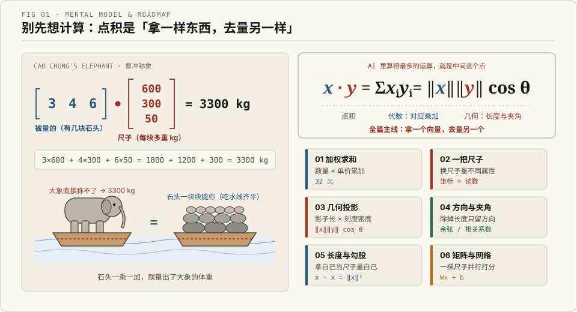
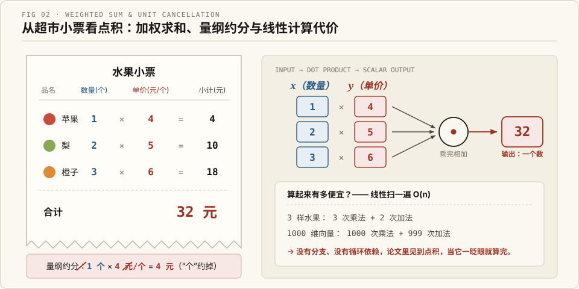
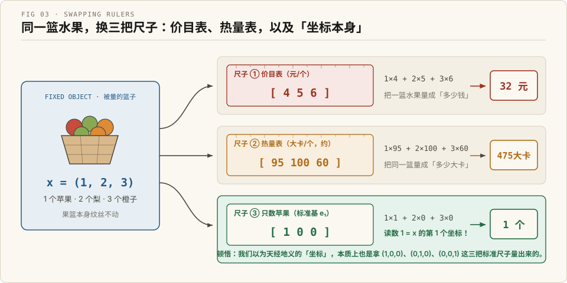
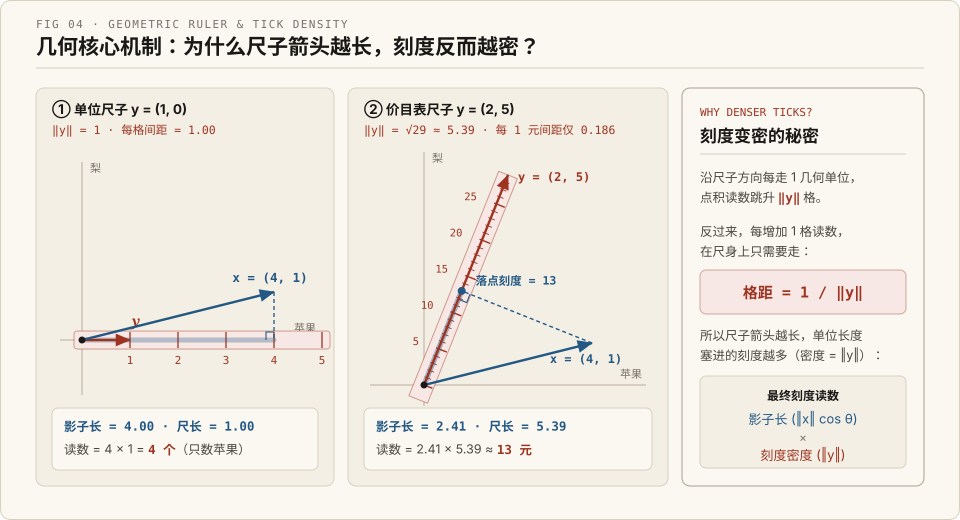
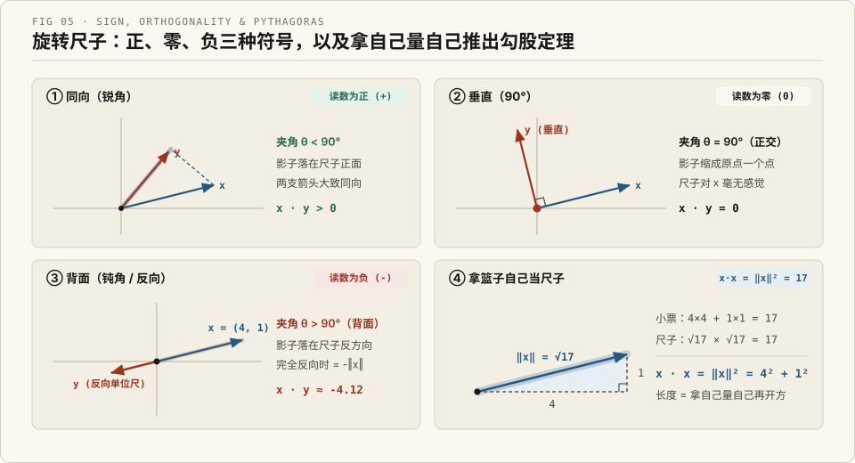
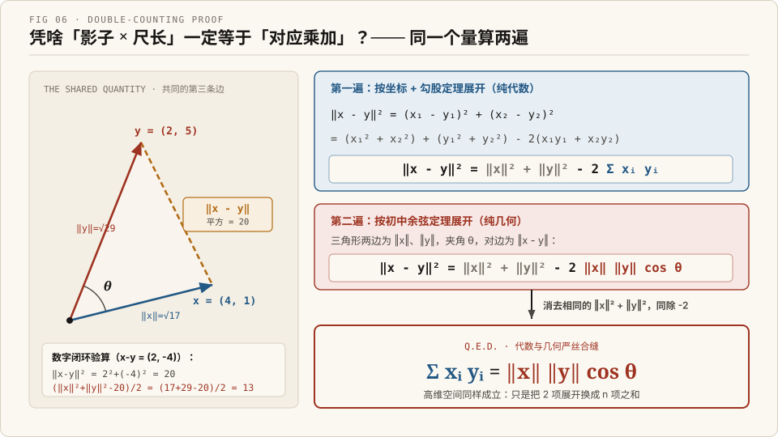
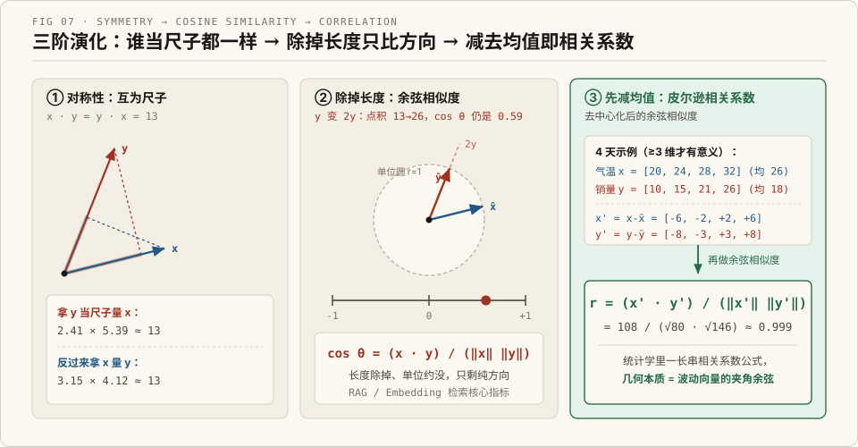
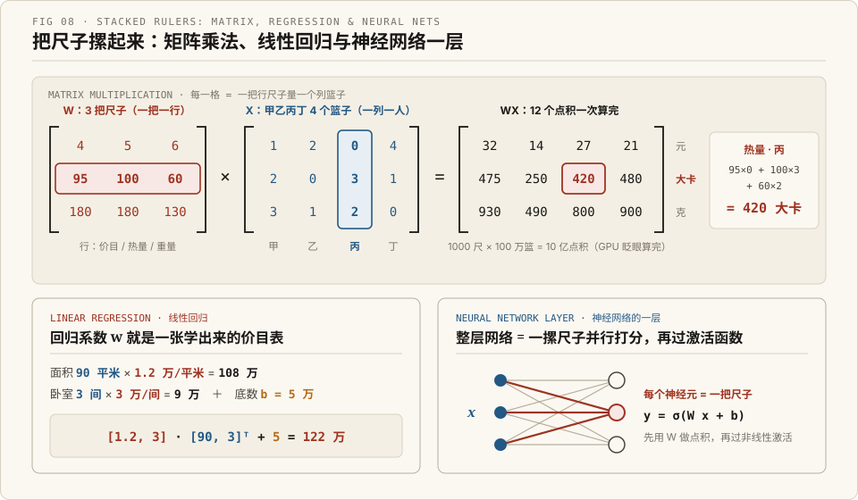

拿一把尺子去量世界：循序渐进拆解向量点积
从曹冲称象与一张普通的水果小票出发，沿着加权求和、坐标本质、几何投影与刻度密度、余弦定理证明、余弦相似度与相关系数，一路串起矩阵乘法与神经网络。
看到下面这个式子，你脑子里第一个蹦出来的念头是什么？
大多数人被应试教育训练出的第一反应是“怎么算”——赶紧拿笔把第一个乘第一个、第二个乘第二个、第三个乘第三个，再加起来。
但“怎么算”这件事，交给电脑就行。人脑真正该想的是另一件事：它在干什么？
答案用中国小学生都听过的故事就能讲透——曹冲称象。大象太重，直接搬不上秤；可石头可以一块一块搬上去，只要吃水线齐平，船里压着的石头就和大象一样重。假设压到同一条吃水线，一共搬了 3 块 600 kg 的大石、4 块 300 kg 的中石、6 块 50 kg 的小石，那么石头一乘一加，就量出了大象的体重 3300 kg。
全篇唯一核心心智模型：向量点积不是枯燥的算术步骤，而是“拿一个向量当尺子，去量另一个向量”。
在整个人工智能世界里，从向量检索到大语言模型的每一层权重计算，算得最多的运算，就是公式 x · y = Σ xᵢyᵢ = ‖x‖‖y‖ cos θ 中间那个小小的实心点。

一、从超市小票说起：加权求和、量纲约分与算力账本
忘掉“线性代数”四个字，先看一张最普通的买水果小票：
- 苹果：
1 个 × 4 元/个 = 4 元 - 梨：
2 个 × 5 元/个 = 10 元 - 橙子：
3 个 × 6 元/个 = 18 元 - 合计：
4 + 10 + 18 = 32 元
这里藏着一个非常细腻、却常被忽略的细节——量纲约分（单位约分）：1 个 × 4 元/个 = 4 元，“个”与“/个”斜着约掉，最后干干净净只剩下“元”。
为什么这个小动作值得停下来看两秒？因为它悄悄暴露了点积里两个向量扮演着不对等的物理角色：第一串数 x = (1, 2, 3) 是数量，在算式里当权重；第二串数 y = (4, 5, 6) 是单价，是一张把“个数”换算成“多少钱”的换算标准。把数量当权重、把单价加起来，就是工程和统计里天天挂在嘴边的加权求和（weighted sum）。
再瞄一眼它的输入输出与计算代价：两串一样长的数进去，永远只吐出一个数（标量）。3 样东西只需 3 次乘法、2 次加法；哪怕扩展到 1000 维向量，也不过是 1000 次乘法、999 次加法（线性扫描一遍，O(n)），没有分支跳转，没有前后依赖。以后在任何论文里见到点积，别被求和符号吓住，直接当它一眨眼就算完。

二、视角翻转：把第二串数看成“一把尺子”
小票谁都会算，但真正让点积活起来的，是下面这次视角翻转：把手里这篮水果 x = (1, 2, 3)（1 苹果、2 梨、3 橙子）固定在桌子上不动，把单价 [4, 5, 6] 看成一把尺子——它的作用，是把这篮水果量成“多少钱”。
既然它是尺子，我们就可以随时换一把尺子去量同一篮水果：
- 价目表尺子
[4, 5, 6]（元/个）→1×4 + 2×5 + 3×6 = 32 元 - 热量表尺子
[95, 100, 60]（大卡/个，约）→95 + 200 + 180 = 475 大卡 - 只数苹果的尺子
[1, 0, 0]→1×1 + 2×0 + 3×0 = 1 个
请在这里停三秒，因为一句点石成金的洞见就藏在眼前：坐标，也是这样量出来的。
盯紧第三把尺子 [1, 0, 0]：它给苹果权重 1、给梨和橙子权重 0，量出来的 1，恰好就是果篮向量 x = (1, 2, 3) 的第一个坐标！同理，拿 [0, 1, 0] 量出第二个坐标 2，拿 [0, 0, 1] 量出第三个坐标 3。
原来，我们以为写死在对象身上的“坐标”，本质上也是拿标准基向量当尺子量出来的读数。换上价目表或热量表，不过是换了一把倾斜的、带自己刻度的尺子去给同一篮东西打分。（在高等线性代数里，把向量量成一个数的“尺子”叫线性泛函 / 对偶向量，听起来吓人，其实说的就是它。）

三、走进几何空间：箭头、投影，以及“为什么尺子越长刻度越密”
刚才我们一直在用算术和表格理解尺子；现在把视角推进一步，看看点积在几何空间里长什么样。
三样水果在三维空间里不好画，先退到两样：横轴代表苹果，纵轴代表梨。于是果篮变成了平面上的一支箭头 x = (4, 1)（4 个苹果、1 个梨，几何长度 ‖x‖ = √(4² + 1²) = √17 ≈ 4.12），而尺子也变成了一支箭头 y。
1. 为什么尺子箭头越长，刻度反而越密？
先看单位尺子 y = (1, 0)（只数苹果）：它的长度 ‖y‖ = 1，沿尺每走 1 个几何单位，点积增加 1，所以每 1 格的间距正好是 1。把 x = (4, 1) 垂直投影到尺子上，影子长 4，读数就是 4 个。
现在换成价目表尺子 y = (2, 5)（苹果 2 元、梨 5 元）。尺子不仅转向了（与横轴成 68.2°），而且变长了：‖y‖ = √(2² + 5²) = √29 ≈ 5.39。
很多人看到这里会一愣：尺子变长了，刻度不应该变疏吗？为什么反而变密了？
算一笔极简的账就豁然开朗：沿着 y 的方向每走 1 个几何单位长度（即单位向量 ŷ = y / ‖y‖），点积读数会跳升 ŷ · y = ‖y‖ ≈ 5.39 元！反过来说，读数每增加 1 元，在尺身上只需要前进 1 / ‖y‖ ≈ 0.186 个几何单位。
所以尺子箭头越长，单位长度里塞进的刻度就越密（密度 = ‖y‖）。于是把篮子 x = (4, 1) 垂直投影到 y = (2, 5) 上：

2. 亲手转一转这把尺子（交互实验 1）
光看静态图还不过瘾的话，直接点击下面 6 个典型预设，或者慢慢拖动“旋转角度”和“尺子长度”滑块——亲眼观察尺身刻度如何变密、影子如何缩成零或翻成负值，以及为什么拉长尺子时点积会翻倍、余弦相似度却纹丝不动：
3. 正、零、负三种符号，以及撞上勾股定理
用长度为 1 的单位尺子转上一圈，点积的四种经典情形一目了然：
- 锐角同向：影子落在尺子正面，读数为正；
- 转到垂直（90°）：影子缩成原点一个点，读数为
0（正交 = 这把尺子对它毫无感觉）； - 转到背面（>90°）：影子落在尺子反方向延长线上，读数为负（完全反向时读出
-√17 ≈ -4.12）； - 拿篮子自己当尺子，量它自己：
x · x = 4×4 + 1×1 = 17；几何上同向影子就是自己，√17 × √17 = 17 = ‖x‖²。这恰好就是勾股定理‖x‖² = 4² + 1²——原来向量的长度，就是“拿自己量自己再开方”：‖x‖ = √(x · x)。

四、凭啥两种算法一定相等？——“同一个量，算两遍”
到这里，一个敏锐的问题自然浮出水面：按尺子刻度读是 ‖x‖‖y‖ cos θ（2.41 × 5.39 ≈ 13），按小票算却是 Σ xᵢyᵢ（4×2 + 1×5 = 13）。一个在三角投影里，一个在坐标算术里，凭什么永远相等？
证明这件事，数学里有一招最优雅的思路：同一个量，用两种办法各算一遍。
把 x 和 y 起点对齐，连起两支箭头的尖端，围成一个三角形。那个“同一个量”，就是第三条边 x - y 的长度平方 ‖x - y‖²：
- 第一遍（按坐标 + 勾股定理展开）：差向量
x - y = (x₁ - y₁, x₂ - y₂)，由勾股定理展开完全平方：‖x - y‖² = (x₁ - y₁)² + (x₂ - y₂)² = (x₁² + x₂²) + (y₁² + y₂²) - 2(x₁y₁ + x₂y₂) = ‖x‖² + ‖y‖² - 2 Σ xᵢyᵢ。
（高维空间完全一样，只是把 2 项展开换成 n 项之和！） - 第二遍（按初中余弦定理展开）：三角形两条邻边为
‖x‖与‖y‖，夹角为θ，对边为‖x - y‖：‖x - y‖² = ‖x‖² + ‖y‖² - 2 ‖x‖‖y‖ cos θ。 - 消去公共项：两遍算的是同一条边，消去两边相同的
‖x‖² + ‖y‖²，再同除以-2，剩下的两项只能相等：Σ xᵢyᵢ = ‖x‖‖y‖ cos θ。
顺手用 x = (4, 1)、y = (2, 5) 验算一次数字闭环：第三边 x - y = (2, -4)，平方为 2² + (-4)² = 20；两边平方和 ‖x‖² + ‖y‖² = 17 + 29 = 46；差值 46 - 20 = 26，除以 2 正好就是 13！

五、对称性、去掉长度、再去掉均值：余弦相似度与相关系数
证明打通之后，回头再看 x · y = Σ xᵢyᵢ = ‖x‖‖y‖ cos θ，三个极其重要的推论会依次浮现。
1. 对称性：谁当尺子都一样
拿 y = (2, 5) 当尺子量 x = (4, 1)，是 影子 2.41 × 尺长 5.39 ≈ 13；反过来拿 x 当尺子量 y，是 影子 3.15 × 尺长 4.12 ≈ 13。因为写成坐标，乘法天然满足交换律：4×2 + 1×5 = 2×4 + 5×1 = 13。
2. 除掉长度：只比方向的余弦相似度
很多场景（比如检索两段文本主题像不像）只关心方向是否一致，此时向量长短反而成了干扰——尺子从 y 拉长一倍到 2y，方向分毫未动，点积却从 13 翻倍成了 26。
干脆把两个长度都除掉，等价于先把两支箭头缩放到单位圆上再点积：
3. 先减均值再算余弦：皮尔逊相关系数
再往前跨半步，一条更令人惊喜的桥梁会突然出现：先各减掉平均再算余弦，就是统计学里的相关系数。
把两串数各自减掉自己的平均值（去中心化）：x' = x - x̄，y' = y - ȳ，再算一次余弦相似度 r = (x' · y') / (‖x'‖‖y'‖)，展开来就是统计学课本里那条令人生畏的皮尔逊相关系数！
用一组 4 天的数据就能一眼看穿（注意：算相关系数至少需要 3 个以上的数据点，只有 2 个数时减均值后必呈 (a, -a)，相关系数只能是 ±1）：假设连续 4 天气温为 [20, 24, 28, 32]（均值 26）、冷饮销量为 [10, 15, 21, 26]（均值 18），各自减去均值后得到波动向量 x' = [-6, -2, +2, +6] 和 y' = [-8, -3, +3, +8]，做一次余弦相似度得 r = 108 / (√80 · √146) ≈ 0.999。原来统计学里的“相关”，几何上就是把两组数据平移到以均值为原点，再看它们波动方向的夹角余弦。

六、把尺子摞起来：矩阵乘法、线性回归与神经网络
理解了“一把尺子量一个篮子”，矩阵乘法就再也不需要死记硬背“前行乘后列”了。
把价目表 [4, 5, 6]、热量表 [95, 100, 60]、重量表 [180, 180, 130] 这三把尺子一把一行摞起来，就是一个 3×3 矩阵 W。甲的果篮竖着排成一列 [1, 2, 3]ᵀ，量出来也是一列：[32 元, 475 大卡, 930 克]ᵀ。
再来乙、丙、丁三个人，每人占一列并排拼成 3×4 矩阵 X，乘在一起得到 WX，四个人的三项指标一次算完：
矩阵乘法结果里的每一格，就是左面的一把行尺子，去量右面的一个列篮子。
走到这里，机器学习和深度学习的两块基石也完全敞亮了：
- 线性回归（
预测 = w · x + b）：系数w就是一张从数据里学出来的价目表。例如预测房价：面积90 平米 × 1.2 万/平米 = 108 万，卧室3 间 × 3 万/间 = 9 万，加上底数b = 5 万，预测房价 =[1.2, 3] · [90, 3]ᵀ + 5 = 122 万。 - 神经网络的一层（
y = σ(Wx + b)）：单个神经元是一把尺子给输入打分；一整层全连接网络是一摞尺子W并行量同一个输入x，加上偏置b，再过一个非线性激活函数（如 ReLU / GELU）。就连当下大模型最核心的 Attention 注意力机制，本质上也是拿 Query 向量当尺子，去量每一个 Key 向量跟自己有多契合。

七、回到大象：一句话收束
现在回头再看开篇那头站在木船上的大象：[3, 4, 6] · [600, 300, 50]ᵀ = 3300 kg。石头数量是被量的，每块石头多重是尺子，一乘一加就量出了大象。
我们一路走过的六个场景，原本散落在小学算术、解析几何、数理统计、线性代数和深度学习五门课本里，拆到最底层，其实只是同一个动作换了六件外衣：
| 场景 | 被量的向量 x | 充当尺子的向量 y | 点积结果在量什么 |
|---|---|---|---|
| 超市小票 | 各种水果的数量（个） | 价目表 / 热量表 | 总价（32 元）/ 总热量（475 大卡） |
| 读取坐标 | 任意向量 (x₁, x₂, x₃) | 标准基 (1, 0, 0) | 向量在第一根轴上的坐标 x₁ |
| 几何投影 | 平面箭头 x | 倾斜且带密度的尺子 y | 影子长 × 刻度密度 = ‖x‖‖y‖ cos θ |
| 向量长度 | 箭头 x | 箭头 x 自己 | 长度的平方 ‖x‖²（勾股定理） |
| 余弦 / 相关 | 归一化或去均值后的 x | 归一化或去均值后的 y | 纯方向相似度 [-1, 1] / 波动相关性 r |
| 矩阵 / 神经网络 | 一排输入样本 X | 一摞权重尺子 W | 批量特征打分 WX（再加偏置过激活） |
下次再在公式、代码或论文里撞见那个小小的实心点 ·，不必再条件反射地背诵计算步骤。只要在心里默念一句：
点积，就是拿一个向量，去量另一个。